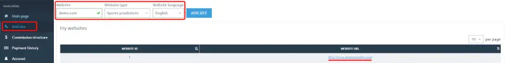
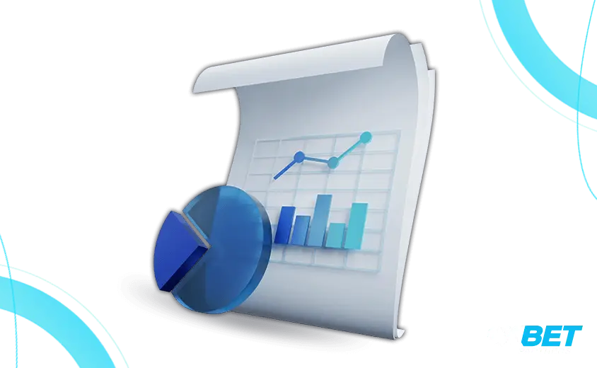

Main page
First that “greets” you in the Personal Cabinet is the message with the actual domain for your partner’s link:
You can choose “Do not show anymore” in it, as with any blockage the actual domain address will come to your email and your Telegram-channel. You will have to follow the domain renewal (they are normally refreshed once a day), as they are being blocked by Roskomnadzor on the territory of the Russian Federation, and the old domains stop working from time to time. So to maintain the constant access to the site for your users you will have to change the domain in your links yourself or go to the personal cabinet and copy the whole link. There is no need to create the new link each time as it will be created automatically.
At the right side of the page there will be a “Question” button which can be used to send the message to Support, then the “Refresh statistics” button, which makes a forced data refresh. You will have to switch the language at the PP site and your unique Aff ID nearby, which can be used as a substitute for login or email when addressing our managers or support. Pressing it will open an additional menu which can be used either to exit your account or to switch to your profile where you will see all data stated. You can edit some of them, change the password, setup the two-factor verification or switch off the mailing concerning the domain change.
After click on profile you will see menu from which you can log out of your account or go to your Profile, where your data are listed. Here you can edit some of them, change the password or set up two-factor authentication (2FA) for the security of your account data
At the main page there are the main account data, but to have a detailed analysis of your work please use the Reports.
Example:
The chart shows the days (months) of the growth and falls of your traffic, it can be created for any period as well as switch the displayed parameters on and off.
Below there is a quick statistic on the main reports sections. It is set for the current month by default (not taking the current day in account).
For more details on the sections, see the description of Reports.
Site adding
Providing the actual traffic is an obligatory cooperation requirement, so to state your resources (websites) you will have to go to the Add Site section and fill in all the required fields and then press “Add”. Sites will appear in the list as well as in the specific field after the generation. It is needed for us to see which are the traffic sources of the players and make sure you are not using the forbidden traffic sources to advertise 1xBet. This will also allow to create different referral links and monitor the traffic effectiveness later.

Further in the menu there is a “Marketing Tools” section, without which you will not be able to start working – and we wouldn’t be able to track its result.
The main promotion instruments are the tracking (partner) links, promo materials and provocodes, all of them having the unique identifier in turn allowing us to understand which partner had brought the players and thus fix them at partner’s account.
Partner (tracking) link
To get the link go to the “Marketing Tools” and select “Tracking links”, then chose the site (if you have several) and press the “Generate” button.
Fields “Target page” and “SubID” are not obligatory – these are the additional tools.
Target page
Using the “Target page” field one can generate a link to any inner page of the BC (Bonuses page, Line, Live, exact match etc.)
For example, to generate the link to the registration page you have to copy the part of the address without a domain starting from the first slash symbol like /registration/
and then paste it into the “Target page” and press “Generate”.
SubID
“SubID” is used to divide the links and to track their individual effectiveness. For example, placing several links at one site you will be able to specify the different SubID and then follow them in the Promo materials report to see which is converting better. To do this, type in the needed SubID and press “Generate”.
You can create a link at the Target page and SubID for the separate sites, and all this will be tracked in the Promo materials report to evaluate the traffic quality.
Promo Materials
Promo Materials (banners) from the personal cabinet already contain the partner (tracking) link inside.
To get them in the “Marketing Tools” choose the “Promo Materials” and press “Code”. This code should be copied and placed at your site.
Please pay attention that banners could be taken for the separate sites, sorted by the formats and sizes.
IF you will just download the banner it will no longer contain the code – it will be just a picture that can be used to set your partner link. If you have difficulties setting the banner at your website please address the support and our technical specialist will help you.
Promo Codes
One more instrument to attract the players is the promocode. Promocode can be used in combination with the partner link as well as separately – anyway the player will be fixed with this promocode. Code should be entered at BC registration after which it will increase the maximum first deposit bonus by 30%. For example the maximum amount of bonus that player might get is $50 and with promocode it will be $65, however, the bonus is equal to the deposit amount.
To get the Promocode, go to Marketing Tools, Promo Codes section and press “Generate”. It will look like 1х_1111.

There is a possibility to create an individual promo code in the form of word (English digits) – to do this please address the PP manager or support.
Important! Do not create the promo codes without thinking, as each partner’s account has a limited number of codes.
Reports

PP statistics is refreshed each hour and the calculation of the partner’s commission is happening a day after.
At the main page of the personal cabinet you will be able to see the quick statistics like:
- Amounts available for withdrawal
- Yesterday’s commission
- Last month
- Last 30 days and total
For the more exact statistic there is a separate section called Reports:
Short summary report – showing the general statistic data for the selected period – you will be able to see it by different sites or media:
Views and clicks are only related to the banners that are set by the code on the site and CTR accordingly will also be counted if you have the correlation of the views and clicks. If you had placed the banner as a picture and set your link – the data for the periods will be shown in the Direct link section same as for all the links created in your account.
Registration with deposit – the player had registered and made a deposit within the selected period.
New accounts with deposits – these are the players that had passed the registration before the selected period, but made a deposit in the selected period of time.
Accounts with deposits – how many players fixed for your account have a deposit on their account and the Deposit amount on these accounts.
Income – this is the amount of funds lost and won by your players for the selected period (BC’s income to say in other words).
Bonus amount – these are the bonuses played that were received by your players. They are always calculated as a minus for your player’s winnings.
Commission amount – your income in %. To calculate your RS correctly you have to dedicate the Bonus sum from this amount and calculate your %% from the result.(Example: Income $1000 – Bonuses $200 = $980, thus 20% of this amount is $196)
If partner has CPA or referal (sub-partnership) commission – it is added to the Commission sum and is expressed in the result number of the Sum of commissions.
Full report – gives the more detailed information about the statistics of the partner’s account for the selected period. The division is done by the sites and besides the parameters present in the Brief report there are data about the site and its ID. a possibility to export to Excel or CSV, and switch the report sections on and off.
Promo-materials report – gives the possibility to check the statistics on the exact site, link or banner that were used for advertising. In this specific report there will be an information about the “SubID” statistics and also there are promo codes, name of the promo, media type and everything you will need to see the effectiveness of all your promo materials at your sites and groups.
Players report – statistics that contains the data on each player that was active (made a deposit, made bets) for the selected time.
There is also a possibility to see the player’s ID that is his player’s account number. New accounts appear in the report at the moment player deposits the fund to his account, but pressing “Players with no deposits” button you will be able to see the players that had just registered without depositing anything.

Sub-partners report – gives the possibility to see the statistics about the attracted sub-partners. Applying such cooperation type is discussed individually with manager.
Reports can be generated for the previous month or current month as well as for any period you specify.
IMPORTANT! In difference from the statistics at the Main page in any report selecting the Current month you will be able to see the data (taking into account the current date) in all parameters besides your commission, as the calculation of commissions is done the next day. If you decide to calculate the commission earned manually – we recommend you to select the date without including the current date.
Funds withdrawal

To get the payment first time you will need to contact the PP support, and after that the payments will be provided automatically. The payments are done once a week (each Tuesday, for the period between Monday and Sunday of the previous week) if the earned funds are higher than the minimum required to withdraw – more than $30.
At the main page you will see the amount available for withdrawal, which is being calculated each Monday. The more exact information about the available amount is shown in the Payment History.

IF you weren’t withdrawing the funds for some time – the sum will be transferred until it is paid. When viewing the available sum you have to keep in mind that minus, as well as profits, will be transferred to the next period. IF you have the commission structure in form of percentage from the attracted accounts with deposits, for example, first you will have a default commission of 15%, after the 101st player attracted it will be recalculated to 20% and to 20% after attracting the 1001st player. The re-calculation is done for the whole month, thus starting with 15% each month as soon as you reach the needed amount of deposits there will be a re-calculation for the existing percentage. AS soon as payments are done each week, and you reached a re-calculation cap (for example) at 2nd or 3rd week – the difference will be calculated at the end of the month and added to the main sum.
Commission structure
Here you will be able to see your commission structure: Revenue Share, starting and ending dates. It is just for your information.